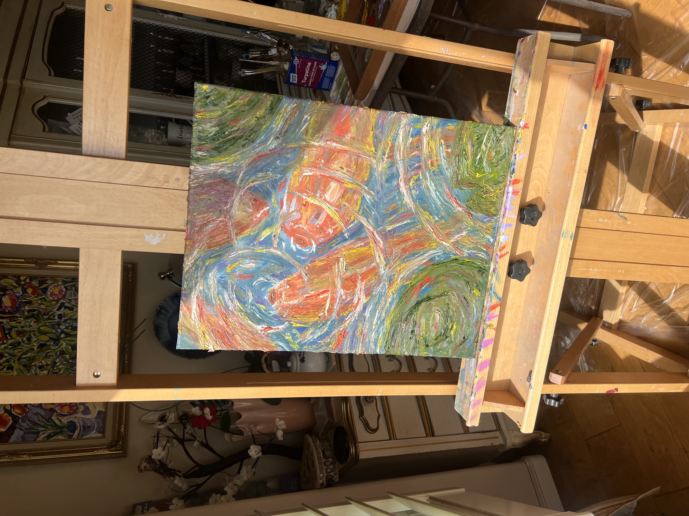
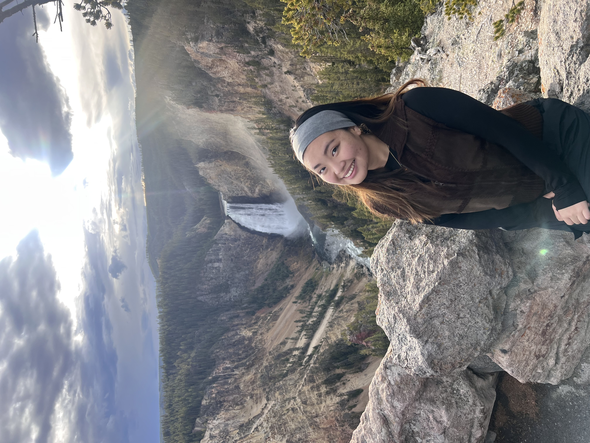

Hi! I'm Gracielle, a Joint Ph.D. Candidate in Psychology and Social Policy, at Princeton University, where I work with Dr. Alin Coman in the Cognition in Collectives Lab.
Broadly, I'm interested in how we come to understand other people, how those understandings shape our beliefs and relationships, and what happens when individual perceptions become collective realities. My research sits at the intersection of social cognition, moral psychology, and political science, with a particular focus on person perception, parasocial relationships, and the psychological processes underlying admiration, devotion, and vilification.
Much of my current work examines how people mentally represent public figures, from celebrities and social media influencers to political leaders. I'm especially interested in how individuals come to embody larger ideas, values, and identities; how these representations shape expectations and moral judgments; and how trust and belief systems respond when those expectations are violated. More broadly, I hope to understand how interpersonal and collective psychological processes contribute to phenomena such as political polarization, misinformation, and social influence.
Before Princeton, I graduated from UC Berkeley, where I studied Psychology, Political Science, and Legal Studies, with a minor in Human Rights. My interdisciplinary background continues to inform my approach to research, which draws on psychological theory and methods to investigate questions with broader social and policy implications. I've also pursued applied research through fellowships with New America and ideas42, exploring how social and behavioral science can inform policy and improve decision-making.
Outside of research, I enjoy traveling, hiking, painting, and pursuing an ever-expanding collection of side quests (academic and otherwise!).